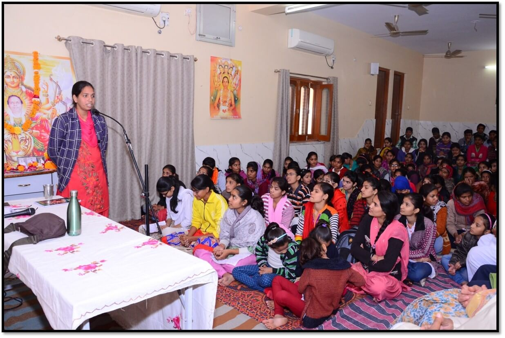

आत्मविश्वास की अभिव्यक्ति
विद्यार्थियों द्वारा मंच पर बोलने, विचार रखने और सीख साझा करने की झलक।
मणिद्वीप में विद्यार्थियों के लिए ऐसी रविवार कक्षाएँ, जहाँ शिक्षा केवल पढ़ाई तक सीमित नहीं रहती, बल्कि विवेक, आत्मविश्वास, अनुशासन, संवेदनशीलता और आध्यात्मिक चेतना के साथ जीवन से जुड़ती है।

माँ बसन्ती जी मनिहार और भैयाजी श्री नन्दकिशोर शारदा का दृढ़ विश्वास था कि शिक्षा तभी पूर्ण होती है, जब उसके साथ संस्कार, अध्यात्म और मानवीय मूल्यों का विकास भी हो। केवल ज्ञान व्यक्ति को पूर्ण नहीं बनाता; प्रेम, करुणा, सहिष्णुता, सद्भाव, अनुशासन, सकारात्मक सोच और सामाजिक उत्तरदायित्व जैसे गुणों का विकास भी उतना ही आवश्यक है।
इसी विचार को व्यवहार में उतारते हुए माँ बसन्ती जी ने विद्यार्थियों के लिए प्रत्येक रविवार मणिद्वीप में संस्कार एवं व्यक्तित्व विकास कक्षाओं का आयोजन प्रारम्भ किया। इन कक्षाओं में शिक्षा के साथ जीवन-मूल्यों, आध्यात्मिक चिंतन, व्यक्तित्व विकास तथा अपने अधिकारों एवं कर्तव्यों के प्रति जागरूकता पर मार्गदर्शन दिया जाता था।
माँ बसन्ती जी के वर्ष 2021 में चैतन्य स्वरूप में विलीन होने के बाद भी यह परम्परा निरंतर जारी है। वर्तमान में मधु माँ के मार्गदर्शन में, समय-समय पर मधु माँ स्वयं तथा मणिद्वीप अध्यात्म परिवार के सदस्य इन कक्षाओं का संचालन करते हैं।
विनम्रता, अनुशासन, कृतज्ञता और मधुर व्यवहार का विकास।
सही सोच, आत्मविश्लेषण और निर्णय लेने की क्षमता।
परिवार, समाज, प्रकृति और राष्ट्र के प्रति सजग दृष्टि।
हर विषय को विद्यार्थियों के दैनिक जीवन से जोड़ा जाता है। इसलिए इन्हें चार सरल धाराओं में रखा गया है, ताकि विद्यार्थी पहले भीतर से जुड़ें, फिर विवेक, व्यवहार और जीवन-शैली में उन्हें उतार सकें।
मानव जीवन का उद्देश्य, अध्यात्म का महत्व और ईश्वर/इष्टदेव के प्रति निःस्वार्थ प्रेम विद्यार्थियों के भीतर आत्मबल और सकारात्मक दृष्टि जगाते हैं।
मानव जीवन अमूल्य है। मनुष्य ईश्वर की श्रेष्ठ कृति है और पृथ्वी उसका कर्मक्षेत्र है। जीवन को सार्थक बनाने के लिए बुद्धि-विवेक का सदुपयोग और निरंतर आत्म-सुधार आवश्यक है।
विद्यार्थियों को दो दैनिक अभ्यास बताए जाते हैं: कम से कम 15 मिनट श्रद्धा एवं निःस्वार्थ भाव से इष्टदेव का स्मरण-ध्यान, और सोने से पूर्व पाँच मिनट आत्मविश्लेषण।
भैयाजी के ज्ञान के अनुसार ब्रह्माण्ड में एक अदृश्य शक्ति है, जो सृष्टि को निरंतर गतिमान रखती है। मानव जीवन के भौतिक पक्ष के साथ एक चेतन पक्ष भी है।
अपने माता-पिता के प्रति सम्मान रखते हुए जीवन के आध्यात्मिक पक्ष को समझने का प्रयास आत्मबल विकसित करता है और व्यक्ति को सत्कर्मों की ओर प्रेरित करता है।
“ईश्वर का निःस्वार्थ स्मरण एवं प्रेम ही मानव जीवन का आधार है।” यह भाव विद्यार्थियों में धीरे-धीरे संस्कार के रूप में विकसित किया जाता है।
इससे सकारात्मक सोच, आत्मविश्वास और निःस्वार्थ साधना की प्रवृत्ति मजबूत होती है, साथ ही स्वार्थ और अन्य अवगुणों में कमी आती है।
शिक्षा को प्रमाण-पत्र से आगे ले जाकर जिज्ञासा, चिंतन, समय-संयम और लक्ष्य के प्रति सजगता से जोड़ा जाता है।
शिक्षा का उद्देश्य केवल प्रमाण-पत्र प्राप्त करना नहीं, बल्कि ज्ञान, चिंतन, जिज्ञासा, आत्मविश्वास और चुनौतियों का सामना करने की क्षमता विकसित करना है।
विद्यार्थियों को प्रश्न पूछने, शिक्षकों से संवाद करने और अपनी जिज्ञासाओं का समाधान खोजने के लिए प्रेरित किया जाता है।
ईश्वर ने सभी को बुद्धि दी है, लेकिन उसका विकास और उपयोग प्रत्येक व्यक्ति में अलग-अलग होता है। चिंतन, जिज्ञासा, तर्क और अभ्यास बुद्धि को अधिक प्रखर बनाते हैं।
इसलिए केवल बुद्धि का होना पर्याप्त नहीं; उसे सही दिशा में विकसित कर बुद्धिमान बनना आवश्यक है।
विद्यार्थियों को अपनी अंतर्निहित प्रतिभा पहचानने और उसे निरंतर निखारने के लिए प्रेरित किया जाता है। अपने कार्यों और क्षमताओं को सजगता से समझना लक्ष्य की दिशा में महत्वपूर्ण कदम है।
भैयाजी के अनुसार समय ईश्वर की अमूल्य निधि है, जो सभी को समान रूप से प्राप्त होती है। सफलता उसी को मिलती है जो समय के महत्व को समझकर प्रत्येक क्षण का सदुपयोग करता है।
प्रतिकूल समय में धैर्य, उत्साह और साहस बनाए रखते हुए प्रयास जारी रखना चाहिए। बीता हुआ एक क्षण भी कभी लौटकर नहीं आता।
व्यवहार, वाणी, कृतज्ञता, परिवार और दूसरों के प्रति संतुलित दृष्टि विद्यार्थियों को सच्चे अर्थों में संस्कारित बनाती है।
विनम्रता, सदाचार, मधुर वाणी और संयम शिष्टाचार के आधार हैं। माता-पिता, गुरुजनों, बड़ों, प्रकृति और सभी प्राणियों के प्रति सम्मान, कृतज्ञता और प्रेम का भाव रखना चाहिए।
बोलने से पहले विचार करना, क्रोध पर नियंत्रण रखना तथा वाणी को मधुर एवं मर्यादित रखना जीवन को अधिक संतुलित बनाता है।
कृतज्ञता विनम्रता, परोपकार और संवेदनशीलता को विकसित करती है। अपनी सफलता में दूसरों के सहयोग, मार्गदर्शन और आशीर्वाद को स्वीकार करना सकारात्मकता बढ़ाता है।
प्रकृति के प्रति कृतज्ञता भी आवश्यक है, क्योंकि वायु, जल, प्रकाश, शरीर, बुद्धि और विवेक जैसे अमूल्य उपहार हमें प्रकृति से प्राप्त होते हैं।
बड़ों के प्रति आदर और छोटों के प्रति स्नेह परिवार को मजबूत बनाते हैं। परिवार में स्वस्थ संवाद, सहयोग और आत्मीयता सुखी जीवन का आधार है।
मतभेद हो सकते हैं, लेकिन मनभेद और कटुता नहीं होनी चाहिए।
सुखी और शांतिपूर्ण जीवन के लिए नकारात्मक सोच और नकारात्मक वातावरण से यथासंभव बचना तथा हर परिस्थिति में संयम बनाए रखना आवश्यक है।
यदि कोई व्यक्ति स्वार्थ, ईर्ष्या, द्वेष या अहंकारवश परेशान करे, तो सतर्कता के साथ दूरी रखते हुए भी मन, विचार, वाणी और व्यवहार को संतुलित रखें: “दोस्त बने या न बने, किसी को दुश्मन मत बनाओ।”
भारतीय सांस्कृतिक चेतना, श्रम की गरिमा और स्वास्थ्य-साधना विद्यार्थियों को संतुलित, आत्मनिर्भर और जागरूक जीवन की दिशा देते हैं।
भारतीय संस्कृति की विशेषताओं और महापुरुषों के प्रेरणादायी जीवन-प्रसंगों से विद्यार्थियों को परिचित कराया जाता है। इससे आत्मसम्मान, साहस, देशप्रेम और अन्याय का सामना करने की क्षमता विकसित होती है।
विद्यार्थियों को घर के छोटे-छोटे कार्यों में प्रसन्नतापूर्वक भाग लेने के लिए प्रेरित किया जाता है। इससे श्रम के प्रति सम्मान, आत्मनिर्भरता, पारिवारिक अपनापन और सौहार्द बढ़ता है।
घरेलू कार्यों में सहभागिता से शारीरिक सक्रियता के साथ मानसिक और भावनात्मक संतोष भी मिलता है; इस अर्थ में यह भी एक प्रकार का योग है।
स्वस्थ शरीर जीवन में सफलता का महत्वपूर्ण आधार है। विद्यार्थियों को इष्टदेव का स्मरण, ध्यान, प्राणायाम और व्यायाम जैसी गतिविधियों को जीवन का हिस्सा बनाने के लिए प्रेरित किया जाता है।
स्वस्थ शरीर में स्वस्थ मन, बुद्धि और विवेक का विकास अधिक प्रभावी ढंग से होता है।

इन कक्षाओं के निरंतर मार्गदर्शन से विद्यार्थियों के सोचने, सीखने और व्यवहार करने के तरीके में सकारात्मक परिवर्तन देखने को मिला है। शिक्षा के प्रति उनकी रुचि और जिज्ञासा बढ़ी है तथा प्रश्न करने, चिंतन करने और समस्याओं का समाधान खोजने की प्रवृत्ति विकसित हुई है।
इसके साथ शैक्षणिक उपलब्धियों, आत्मविश्वास, अनुशासन, समय-प्रबंधन, सक्रियता और लक्ष्य के प्रति समर्पण में भी वृद्धि हुई है। निरंतर अभ्यास से उनमें सकारात्मक सोच, आत्मनिर्भरता, विनम्रता, संयम, मानवीय संवेदनाएँ और सामाजिक उत्तरदायित्व जैसे गुण भी विकसित हो रहे हैं।
इस प्रकार इन कक्षाओं का उद्देश्य केवल ज्ञान प्रदान करना नहीं, बल्कि शिक्षा को जीवन से जोड़ते हुए विद्यार्थियों की जीवन-दृष्टि और व्यक्तित्व में स्थायी सकारात्मक परिवर्तन लाना है।
यहाँ आप बाद में विद्यार्थियों के अनुभव, छोटे वीडियो, कक्षा की झलकियाँ और सीख साझा कर सकते हैं। अभी के लिए इन्हें सुंदर मीडिया प्लेसहोल्डर के रूप में रखा गया है।

विद्यार्थियों द्वारा मंच पर बोलने, विचार रखने और सीख साझा करने की झलक।

जीवन-मूल्यों, अनुशासन, कृतज्ञता और सकारात्मक सोच पर आधारित अनुभव।

स्नेह, संवाद और आध्यात्मिक मार्गदर्शन से भरा सामूहिक सीखने का अनुभव।
प्रेम, करुणा, सद्भाव और सेवा से प्रेरित यह मार्गदर्शन वर्षों से विद्यार्थियों और युवाओं को सार्थक जीवन की दिशा देता आ रहा है। शिक्षा, संस्कार और आध्यात्मिक चेतना के समन्वय से आत्मविश्वास, आत्मनिर्भरता, मानवीय मूल्यों और सामाजिक उत्तरदायित्व का विकास किया जा रहा है।